|
Hello dahlia friends!
The month of May means planting time! We hope
everyone has enjoyed the spring weather and
trust you are excited to have hands in the dirt
and tubers in the ground.
We kicked off the beginning of the month with a
fun meeting and wonderful presentation. YDS
member Andrea Campbell shared a slide show of
her dahlia experience with growing a sport
dahlia. It was fun to learn that maybe others
have discovered sports in their own garden and
will now know how to try and propagate a new
variety.
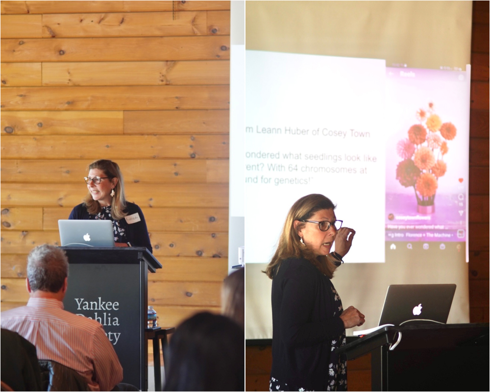
Photo by: John Livornese
The second half of the monthly meeting we had a
blast auctioning off popular and hard to get
your hands on dahlia varieties. Thank you to
Chau Ho, Claire Carrazco and Roy Christoph for
donating dahlia tubers to the auction. We are
glad members were able to come away with some
wonderful varieties and appreciate the funds the
auction raised for the club. We look forward to
the auction next year with an official gavel.
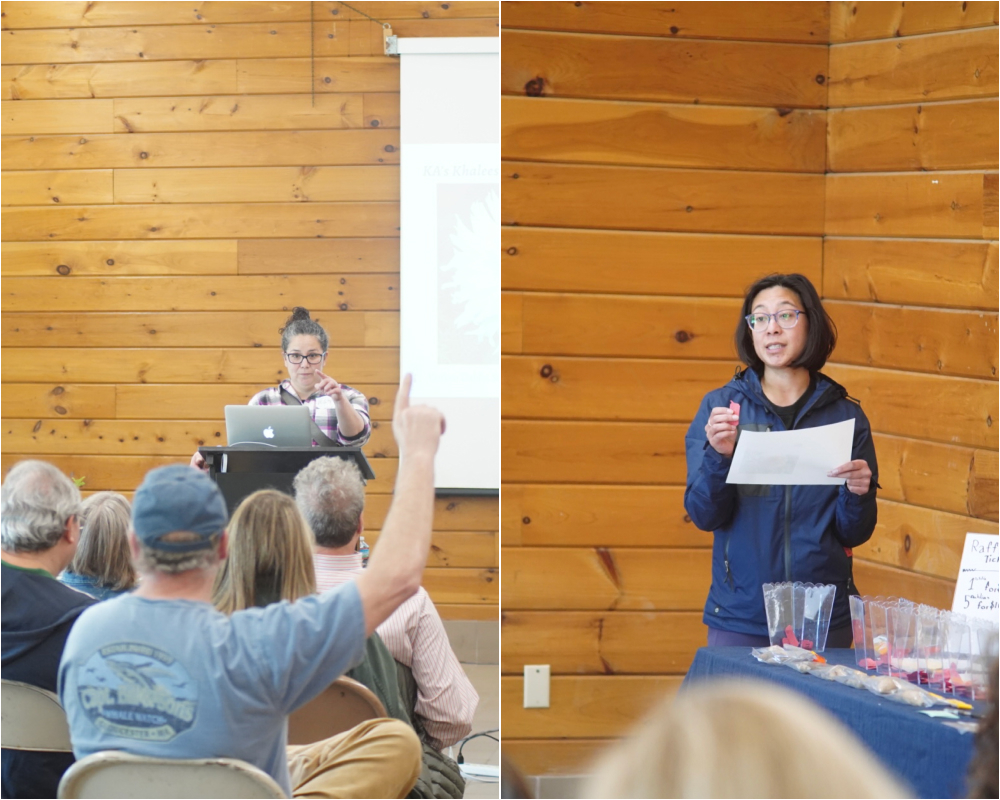
Photo by: John Livornese
This was our first year selling tubers and we
were really glad we could offer a wonderful
tuber selection to our YDS members. We were also
excited to have tubers to sell to the public and
have a wonderful place to have the tuber sale.
We thank Massachusetts Horticulture Society for
giving us a wonderful opportunity to have a
wonderful outdoor event at The Gardens at Elm
Bank.
We are really happy to continue with a club
tuber in 2022 and give one to every YDS member.
Our club tuber this year is Blizzard. It’s a
wonderful white formal decorative dahlia that is
easy to grow, and produces lots of flowers and
tubers that are easy to divide. We hope you
enjoy growing it and are glad to have you as a
YDS member.
Looking forward to seeing you online for our
next meeting via Zoom! Save-The-Date for Sunday,
June 26th.
– Misty & Carol
|
|
June 26th Meeting
Dahlia Virus Presentation by Dr. Hanu Pappu

Spence Farm Address: 41 Wyman St, Woburn,
MA 01801
Our next meeting will be via Zoom, and we are
thrilled to announce that our very special guest
will be Dr. Hanu Pappu, professor in the
Department of Plant Pathology at Washington
State University, Pullman, WA, and world
renowned expert in dahlia viruses. The research
into dahlia viruses is ongoing, and new
discoveries are being made, much of it hopeful.
Did you know that virus-free dahlias may now be
propagated by tissue culture?
Exciting new experiments are discovering virus
free dahlias through propagated tissue culture
Dr. Pappu will share the latest findings with
us, and will tell us how to know if one of our
dahlias may have a virus and how to help prevent
the spread of virus in our gardens. Join us and
learn what is a dahlia virus, how a virus can
affect dahlias, and why you should care about
them in your garden.
Location: Zoom
Date & Time: Sunday, June 26th,
*10:00am - 12:00pm (EST)
(*log in at 9:45 to say hello and get
settled. Meeting will start promptly at
10:00am)
Zoom Link:
https://us06web.zoom.us/j/82376433549?pwd=WU0wZllRakZKK05XZWlpcnFBckNvdz09
|
|
Member Spotlight
Debra Kraft
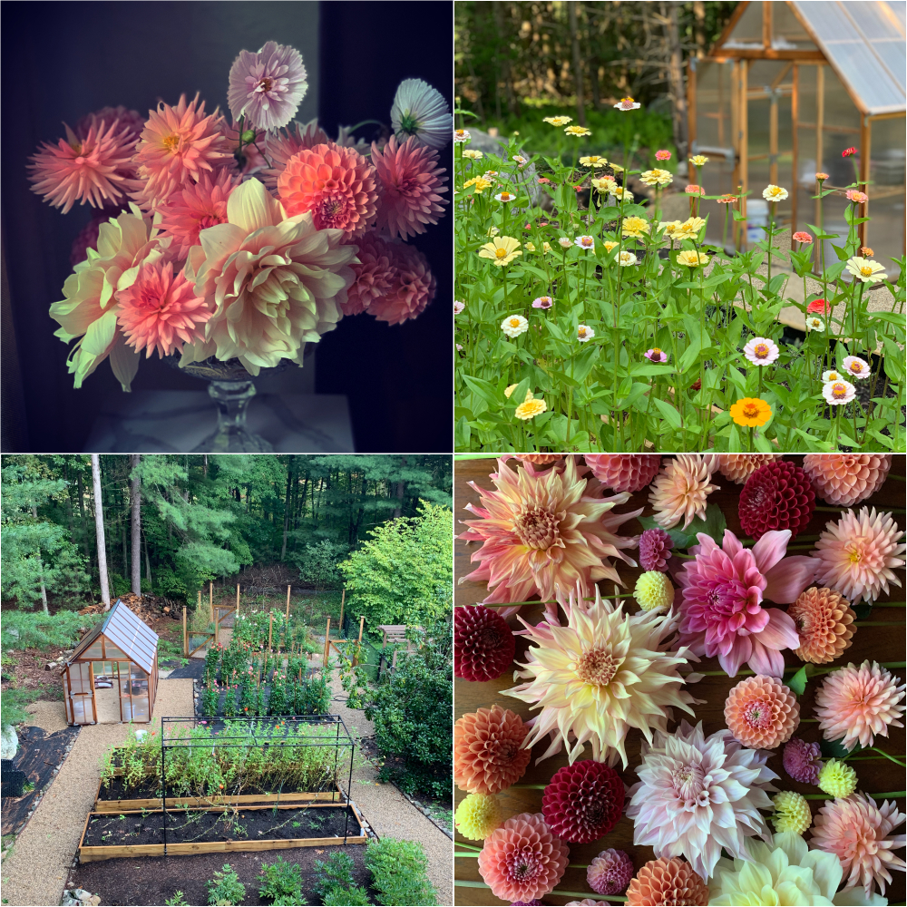
Photos by: Debra Kraft
 @debrakraftfloraldesign
@debrakraftfloraldesign
I was introduced to growing dahlias from a
garden club member originally, then again when
my husband and I went to Cross Street Flower
Farm in Norwell MA to see their dahlia field. I
dabbled with trying to unsuccessfully grow them
without enough sunlight for a couple of years.
Then last summer we cleared some land in a full
sun area specifically to grow dahlias. Last
summer was our first year growing in this new
garden, which we cleared during covid.
Our cutting garden is small. It consists of a
peony bed, 5 terraced raised boxes which are 16’
long by 3’ wide, a dahlia garden approximately
16’ by 20’ and a fenced in garden that has 3
more raised boxes. I had approximately 48
dahlias in 2021, and I will have 60 (or more)
for 2022.
Along with dahlias, we grow heirloom tomatoes,
lettuce, eggplant, carrots, beans, zucchini,
herbs, zinnias, lavender, stock, delphinium,
sweet pea, cosmos, climbing roses, hops,
hydrangea and several other flowering annuals.
We have a koi pond with fish and lots of aquatic
plants and a waterfall. We also have a shade
garden, a rock garden and a sweet little
greenhouse which was constructed last year.
What I love most about gardening is creating
garden rooms - each with a different purpose. I
love walking outside and gathering fresh herbs
and veggies for dinner along with a basket full
of flowers. Two of my least favorite things
about gardening are weeding (of course) and
finding snakes, which scare me.
I love the color variations, size, and shape
range coupled with prolific blooming which
dahlias offer. The ball forms are great for
floral arranging. I also love the cactus,
anemone and collarette varieties. Yet my large
“dinner plate” dahlias are the greatest focal
flowers for my floral work. I adore the coral,
lavender and peach colors. My top ten favorite
dahlias are:
- Lindas Baby
- Breakout
- Mango Madness
- Jowey Winnie
- Cornel Bronze
- Koko Puff
- Henriette
- Sweet Natalie
- Cafe au lait
- Blizzard
My least favorite thing about dahlias is feeling
like you can never have enough!
For me, dividing and storing is the most
challenging part of growing dahlias, because I
do not have the ideal storage area to maintain a
good temperature for winter storage. Also, one
of the things I would like to learn is if I have
done the most I can for laying out a great
dahlia garden, or if there is anything I can do
to make it better. I would have liked to have
started potting up my tubers two weeks earlier
than I did this year, but I didn’t have time. I
am hoping that I will have as good a dahlia
season this year as I had last year. My goal is
simply to grow beautiful dahlias to use in my
floral arrangements. I would also love to host a
party in my garden during the height of dahlia
season!
Debra’s Dahlia Tip: Buy the white hanging plant
tags from YDS to label the base of your stalks,
they are great!
|
|
Dahlia Tip
How to sanitize your clippers while working in
the garden
By Misty Florez
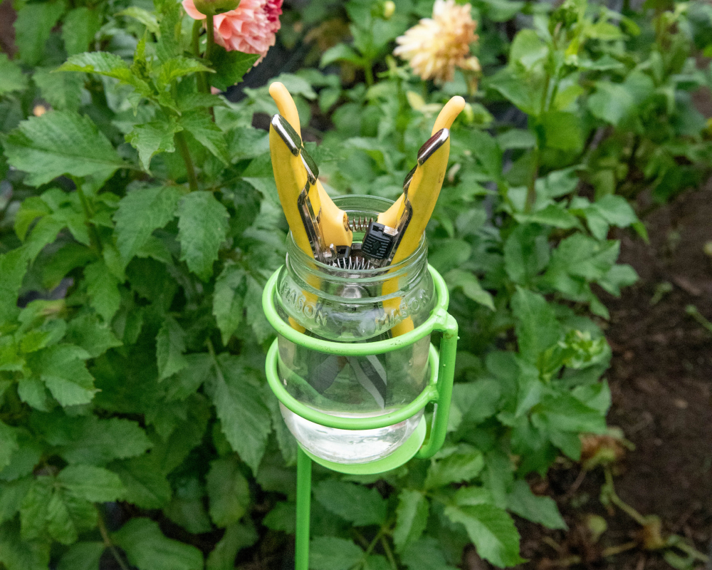
"Necessity is the mother of invention"
–Plato
Disinfecting your tools is the best way to help
minimize the spread of dahlia viruses.
Problem:
How do we manage a jar of disinfectant in the
garden?
Challenge:
Initially we brought a jar with disinfectant out
to the garden and found that it was a little
awkward trying to find a level place to put the
jar on the ground and occasionally it would get
knocked over.
Solution:
Whoever created the beverage holder was a
genius!! We love using one to hold our jar of
disinfectant with a few pairs of snips. While
using one and cutting dahlias off a plant the
extra pair is in the disinfectant. When cutting
stems off the next plant we are able to switch
out our used snips for the fresh pair.
Order with Amazon Smile
and support YDS:
Heavy Duty Outdoor Beverage Holder Stakes
|
|
Dahlia Experiment
Update: Glued tuber neck
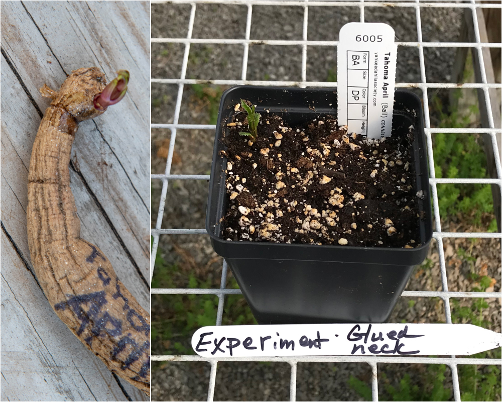
Photos by Misty Florez & Carol Palmer
Gardening is all about experimenting and we love
a good science project and research. Hands on
trial and error is the best way to learn and we
want to share with all of you the results we
discover.
May 15, 2022 YDS Experiment:
We wanted to test out the potential on some of
our super glued dahlia tuber necks. We secured a
not so secure neck with super glue on a Tahoma
April and we are happy to report that the dahlia
has sprouted. We’ll keep you updated with how it
does at the garden and how good the tubers look
at the end of the season!
|
|
Dahlia Forms
Orchette
Variety: Fancy Pants
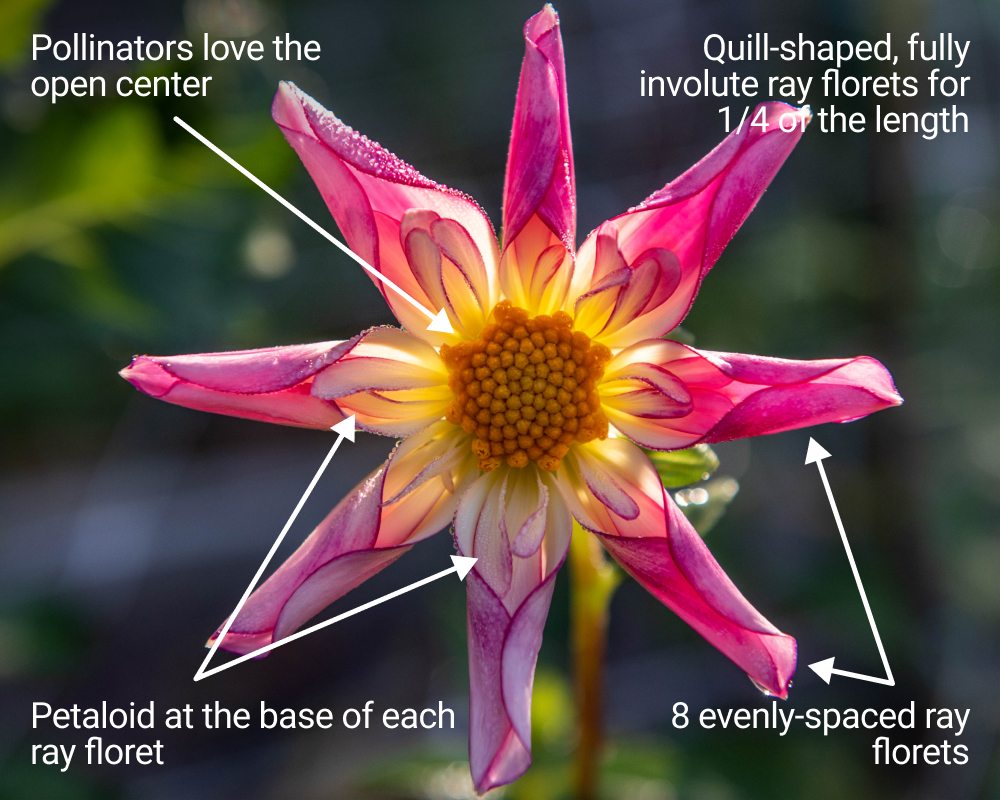
Photography by: Misty Florez
|
|
YDS Growing Partners
Brilliant Dahlia Flower Farm: Growing Dahlias in
a Greenhouse & Field Grown Dahlias
by: Carol Palmer & Sharon Hoskins
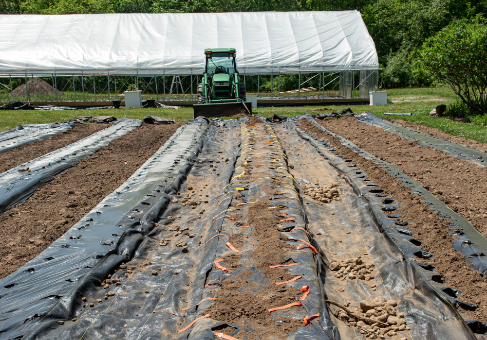
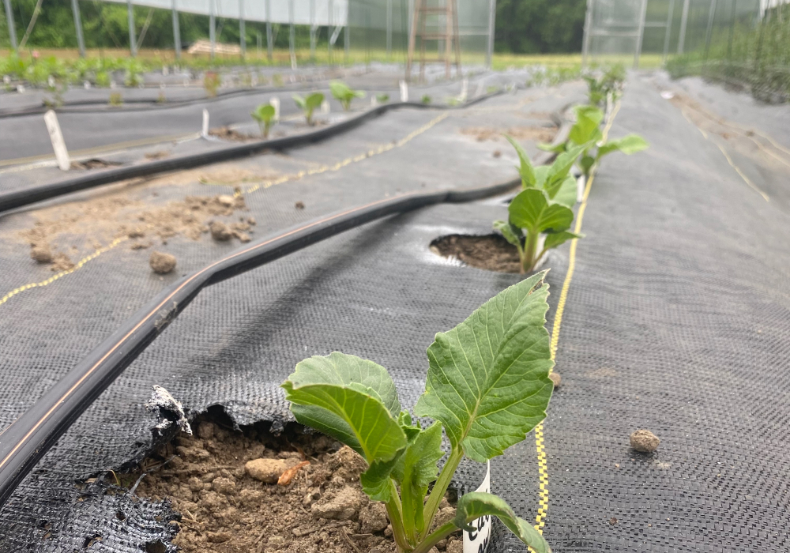
Photos by Sharon Hoskins & Misty Florez
This year for the first time YDS member Sharon
Hoskins of Brilliant Dahlia Flower Farm in
Rehoboth MA is growing dahlias in a high tunnel.
Over the next several months, Sharon will be
sharing with all of us what she is learning
about growing dahlias in a high tunnel, what are
the challenges and the rewards of growing
dahlias this way, and what are the differences
between growing dahlias in the field and under
cover in a high tunnel. We think it will be very
interesting to hear what Sharon is discovering
and are excited to follow along as she shares
with all of us her first year journey into
growing dahlias in a high tunnel. Thank you,
Sharon!
This is our first year growing in a high tunnel
on our farm. We received a grant from the
National Resources Conservation Service (NRCS)*,
for the high tunnel and put it up this winter.
Because it was put up in winter during one of
the coldest weeks in February it took a while
for us to get electricity out there so we could
inflate the walls of the plastic, which creates
the warmth you need for dahlias. I watched the
soil temperature for several weeks and it was
steady in the 60s from the end of March to the
beginning of April. Although I was hesitant to
risk my dahlia tubers, I did start planting
April 11th.
This row (pictured in the photo) has 130 dahlias
in it, mostly dinner plate size.
Because we are a cut flower farm, we also
planted varieties that are popular for weddings
such as Blizzard, Bridezilla and Peaches-n-Cream
to try and get earlier blooms. We have a lot of
sprouts and growth going on so far and even took
a successful cutting from a KA’s Cloud cutting
that needed to be pinched.
*Link to the Natural Resources Conservation
Service, an agency of the USDA:
https://www.nrcs.usda.gov/wps/portal/nrcs/site/national/home/
|
|
Member Post from Social Media: @itsjessdevine
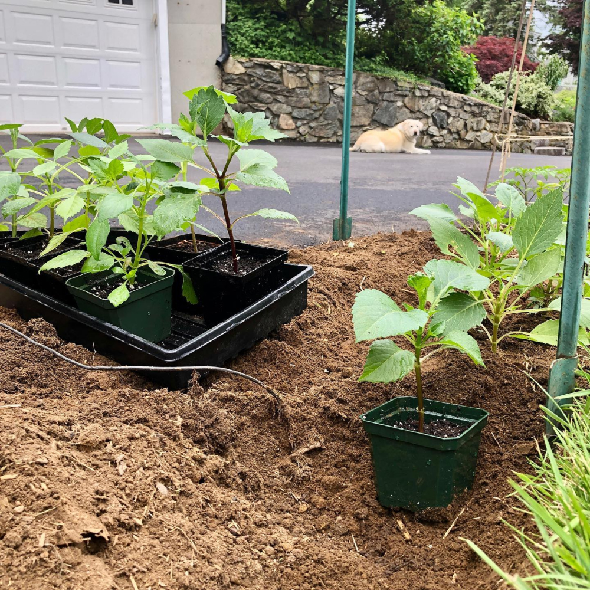
Photo by Jessica Devine
We can’t wait to see your dahlia seedlings
bloom!
|
|
Thank you! May Volunteers
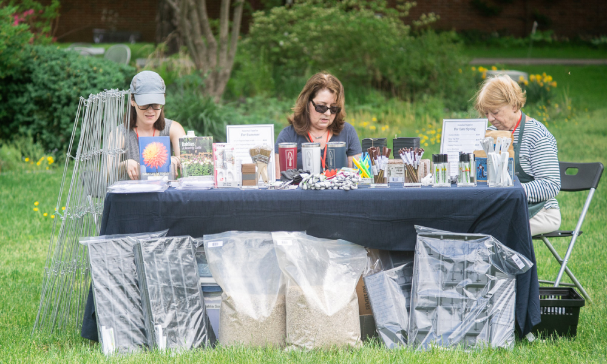
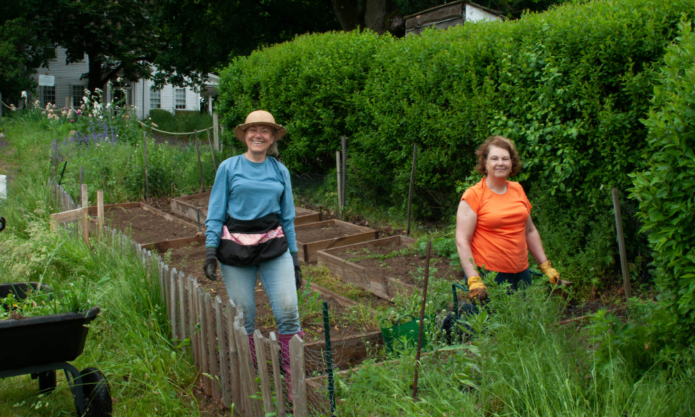
Photos by Misty Florez & Robin Smith
We appreciate all the help we had this month!
Pitching in with help planting tubers, preparing
for our Public Tuber Sale, helping at Mass Hort
with the sale, and beginning to plant a few of
our growing partner locations. Carol and I
appreciate the time everyone has shared to help
out. Every bit helps to run YDS!
- Allison Balik
- Rose Beecher
- Andrea Campbell
- Cheryl Curtin
- Kathleen Curtis
- Leticia Fleischer
- Sharon Hoskins
- Nancy Miller
- Berns Nera
- Robin Smith
- Kira Snyder
- Jenna Strickland
- Betsy Szymczak
- Rich D’Orsi
|
|
2022 Growing Partner Introduction
Flowers 2 Empower
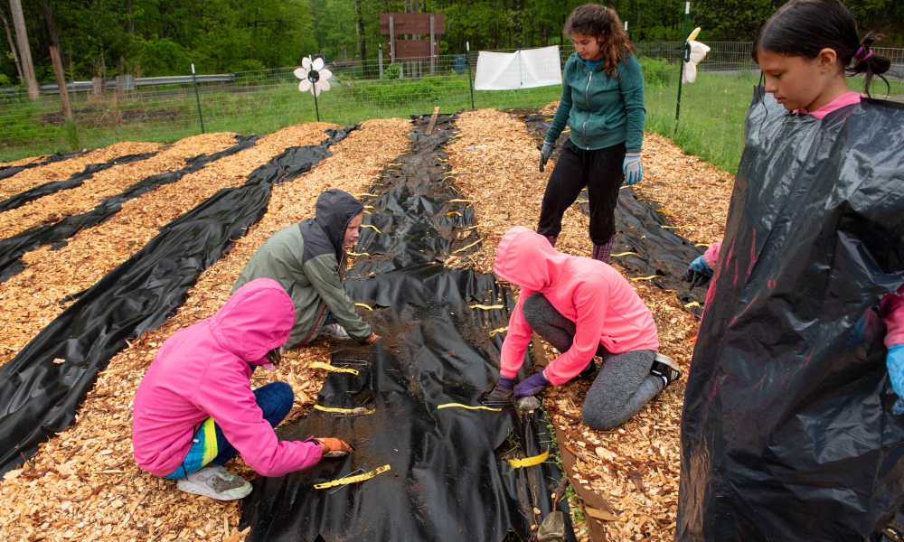
Photo by Misty Florez
We are very excited to introduce one of the new
YDS Growing Partners that we are working with in
2022. Our new partner was a connection through
Wright-Locke Farm and the owner Elizabeth
Almeida of Fat Moon Mushroom Farm. In addition
to running a mushroom farm, Elizabeth was in
search of a program that would mentor, provide a
supportive environment and encourage young women
to learn new skills through growing and selling
flowers. The result is a wonderful new program
called Flowers 2 Empower in Westford, MA.
Their garden is located next to Westford
Community Gardens on Day Field, 41 Graniteville
Road, Westford, MA. The young women, all new to
growing dahlias, were all ready to participate.
We started with a brief introduction to the
dahlia tuber and how to plant. 7 of them from
the program were able to join us and within an
hour 105 dahlias were planted. They’ll have
wonderful and reliable cut flower varieties that
will be harvested for bouquets to sell in the
fall. YDS is thrilled to be able to support them
and excited for their success.
|
|
ADS National Dahlia Show: September 22 - 25,
2022
Road Trip! We have booked our room reservations
and are making travel plans to attend the 2022
National Dahlia show hosted by National Capital
Dahlia Society in Reston, Virginia.
NCDS has a website with all the information and
forms to register. The blooms at a national show
are always fantastic to see and in addition we
are excited about the bus tour and speaker
lineup. Check out the link and the details!! It
would be so much fun to have a group of YDS
members at the show! Let us know if you will be
going!
http://2022-national-dahlia-show.org/
|
|
|
Upcoming Meetings & Events
June 26th: Zoom Meeting - All
about Dahlia Virus with Dr. Hanu Pappu
July 23rd: Previewing the
dahlia garden and Lily garden tour with Y.D.S
member Roy Christoph, Wenham MA
August 11th: Zoom Meeting -
With a special guest presenter
|
|
|
|
|